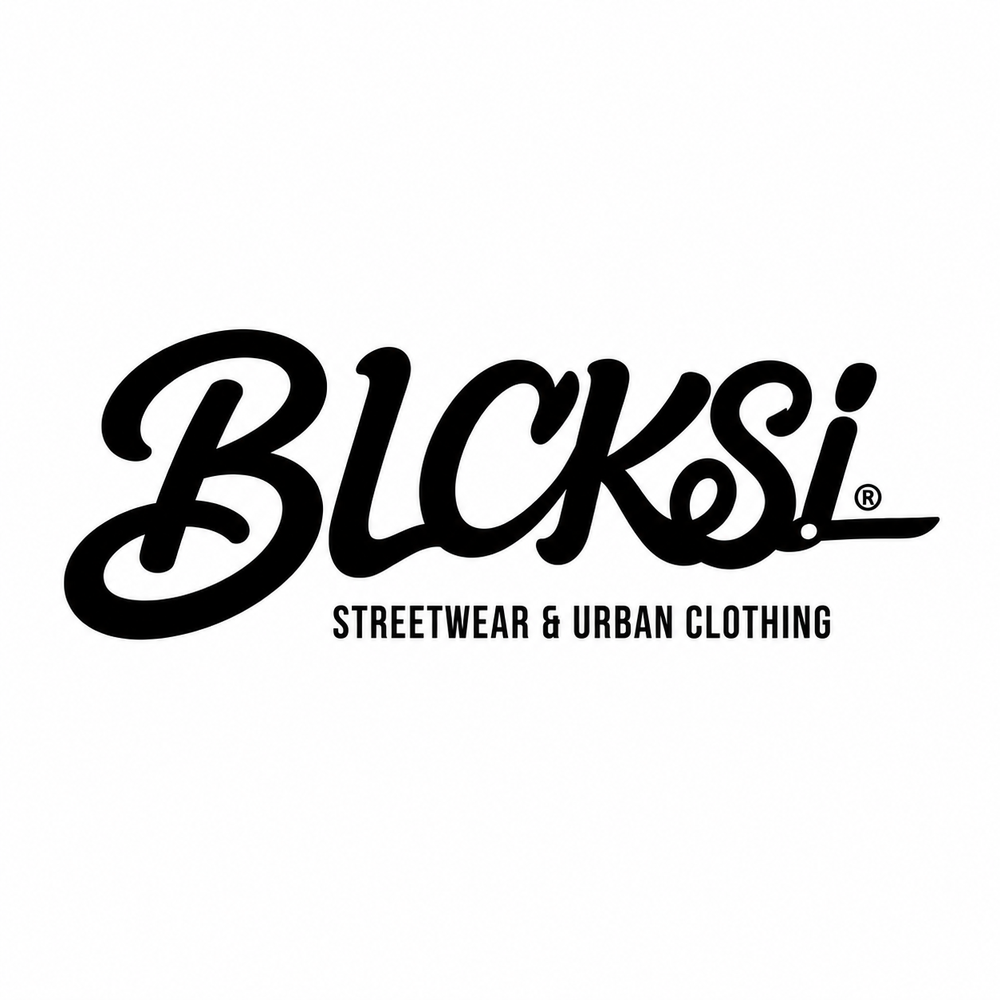

VISÃO
IDENTIDADE PRÓPRIA
BLCKSI / A MARCA
A BLCKSI nasceu das minhas próprias experiências, vivências e da forma como vejo o mundo. Aquilo que faz parte do meu dia a dia tornou-se inspiração para criar uma marca com identidade própria — uma forma de transformar ideias e visão pessoal em peças que falam por si.
Não quero criar roupa apenas para acompanhar tendências. Quero construir uma marca com presença, atitude e uma linguagem visual que se reconhece. Cada escolha faz parte dessa visão: do conceito à apresentação, sempre com atenção à identidade e aos detalhes.

Não vestir para ser igual. Vestir para mostrar quem és.
Uma ideia pessoal transformada numa marca em constante construção.
Peças com presença, atitude e espaço para a tua individualidade.
A NOSSA ESSÊNCIA
Estou a construir a BLCKSI passo a passo, com visão, dedicação e vontade de levar esta identidade mais longe. Se te identificas com esta forma de pensar o estilo, estás convidado a fazer parte do caminho.
DESCOBRIR A COLEÇÃO ↗